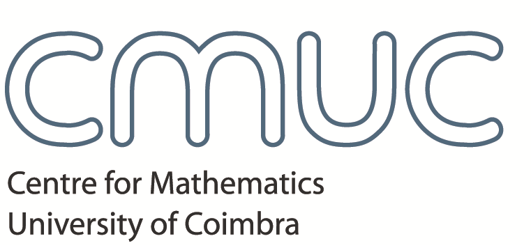
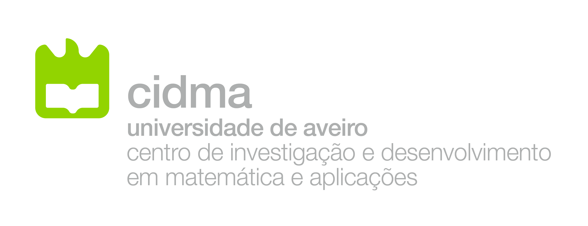
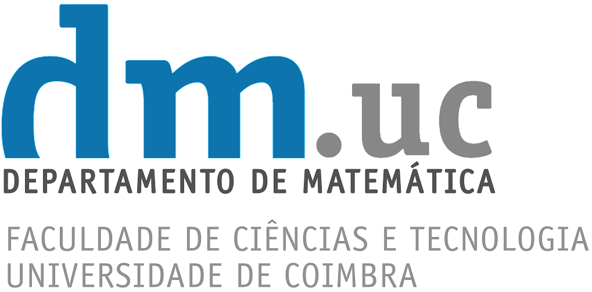
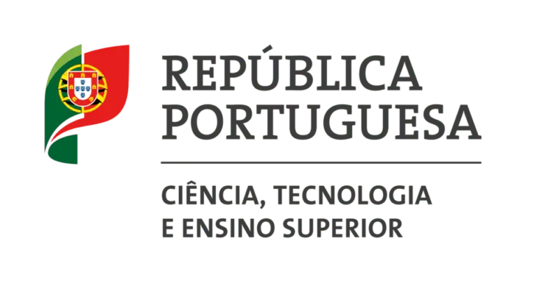

About
Category theory and its connections with algebra, topology, logic and computer science. Researchers and students are welcome.
Key dates
- Abstracts
- Decisions by
- Registration
All dates in 2026. Deadlines: 23:59, Coimbra time.
Registration & abstracts
Registration is free. Email Maria Manuel Clementino with the completed form in the email body.
- Subject
PCS-2026 SUBMISSION
For a talk, also attach your abstract’s .tex source and compiled .pdf using the template. Attendance only: no attachments. No need to send more than one e-mail.
Abstract template: LaTeXPDFZIP
Form to copy into your email
Full name: Affiliation: Contact email: Submitting a talk? Yes / No If Yes: Talk title: Subject area: Keywords: MSC2020 (optional): Saturday lunch? Yes / Yes + 1 / No Dietary restrictions: May we publish your name and affiliation? Yes / NoDownload the text form
Optional Saturday lunch, paid by participants. Other lunches are independent.
Programme
View programme · To be announced.
Participants
Names and affiliations will be listed from 8 November.
Organisers




